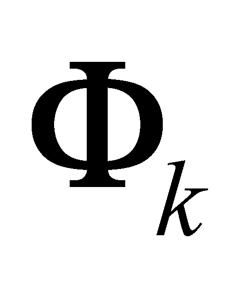
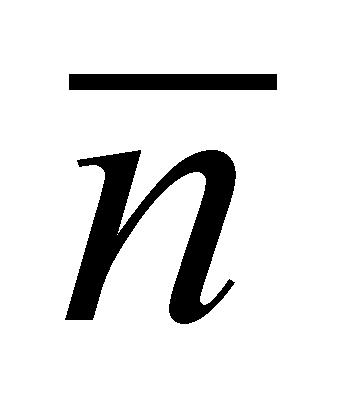
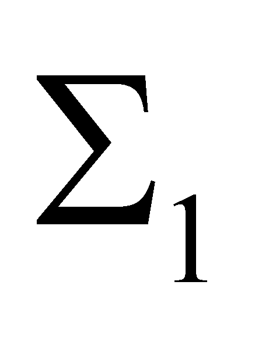
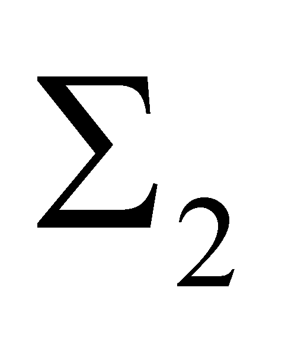
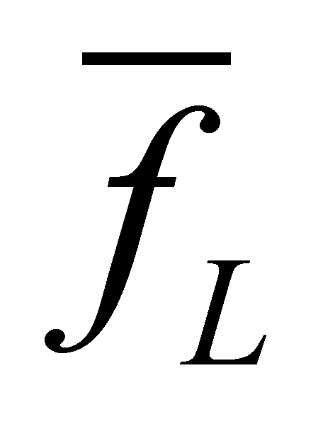
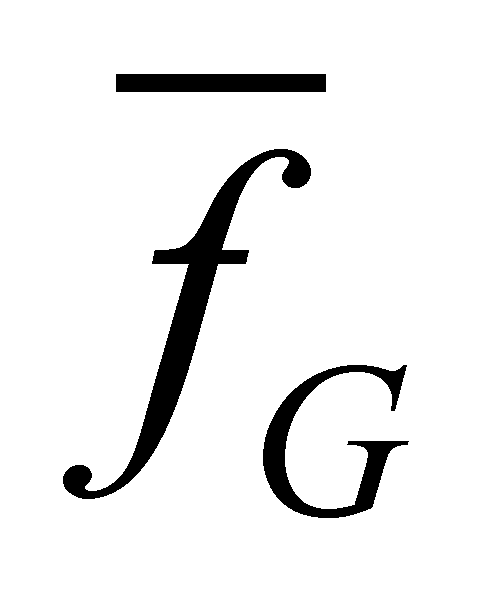

|
|
|
The existence of fluxes  in a limited volume V, and non-existence or their lowest existence of the outside, means that the flux density inside a MS is higher than the flux density outside MS (reference density of the initial medium from which the system has arisen during its generating process). Due to this reason, a gradual transition from a density to another shall exist.
Definition 7.2.3.1: The spatial transition zone from the inner flux density of MS to the flux density of its outer medium is the real bounding surface (RBS) of MS.
A real bounding surface is a fundamental part of the structure of a material system, it is “the separator”, the boundary between the system which owns it and its external medium. All the fluxes exchange between the system and the outside are passed by RBS, and this surface may be also, in most of the cases, a closure barrier of the fluxes stored in the inside. As we have previously mentioned, as compared to a virtual surface (theoretical, computing one) used in the mathematics field, RBS shows few essential differences:
Permeability (transparency, transmittance) pk to a k-type of flux (given by the definition 7.2.1.1) is always subunitary (pk1), whereas this permeability for the virtual surfaces is always unitary (pk=1 because it does not exist in case of the material fluxes, being only an imaginary, computing surface). The subunitary transmittance of RBS makes that an incident flux (coming from the inside or outside) to not be totally transmitted, always existing a deviated (reflected) component of this flux. The existence of this kind of flux coming from the incident fluxes - reflected flux - is a basic property of MS, even one of the identification (certification) criteria of its materiality, as we are about to see in chapter 8. Also, subunitary permeability allows the retention (confinement) of the inner fluxes inside RBS.
The tangential components of the incident, reflected or transmitted fluxes occur in case of RBS, these are components which lead to other mathematic relations, unconceivable for the virtual surfaces (as regards RBS, fluxes which simultaneously have the curl and divergence different from zero, the tangential component could have a non-zero curl and the normal one, a non-zero divergence).
As I have previously mentioned, RBS is not a surface under the meaning known in mathematics, but a mathematic model of a part from a MS, part which separates the inner spatial domain of MS from the outer spatial domain. Under the flux density terms, RBS is (as it is shown in the definition 7.2.2.1), a spatial zone (a space placed between two confined virtual surfaces) located outside of a MS, hosting the transition from the flux density inside MS, to the flux density of the external medium.
Fig. 7.2.3.1
Figure 7.2.3.1 shows an example of cross section running through this kind of RBS (is the normal line on the bounding surface), which separates two phases: liquid (ML in the lower section) and gaseous (MG in the upper section) of a medium (such as the oceans water, from water vapour of the proximity atmosphere), where the grey density color suggests the elements density.
If the two media are supposed to be isothermal in the proximity of RBS, the water molecules from the bounding surface, with an energy higher than the liquid’s cohesion energy shall escape from the liquid by forming the gaseous phase of the water, the vapour from the proximity of RBS, whose scalarized state attribute is the vapour pressure (see annex X.9 for details about the scalarization term). The spatial area with d thickness placed between two theoretical surfaces  and  (placed orthogonally along the figure’s plane), where the gradual transition from ML to MG takes place, represents RBS which limits the two media. The thickness of this area may take values from couple of molecular diameters in case of the gas bubbles in the mineral water, up to several meters in case of the ocean’s tumultuous surface.
The transition from one medium type to another (according to the example with the water transition from the liquid phase to the gaseous one), means the transition from a density of the molecular flux35 (stochastic at the medium level and coherent at the molecule level) which is more reduced ( in L phase) to a higher one ( in G phase). The horizontal axis from the figure 7.2.3.1 (which has no connection with the left figure but only with the normal line) is the modulus of this flux density. If in case of the gas bubbles, RBS is very close to a virtual surface (the human eye is not able to detect the unevenness, it appears to be a perfectly smooth surface), in case of the ocean RBS, it is much more different as compared to what is usually understood by the word “surface”. However, we are dealing with the same model in both cases: a transit spatial zone from a distribution type characteristic to a medium, to another distribution type which is specific to other medium. The fluxes which try to cross through this uneven distribution area, regardless the part they came from, shall be decomposed in multiple components, as we are about to see next.
35 The molecular flux is defined by the molecules motion, and the density (since we are talking about a discrete distribution) of this flux is even the density of the individual flux of a molecule.
Copyright © 2006-2011 Aurel Rusu. All rights reserved.